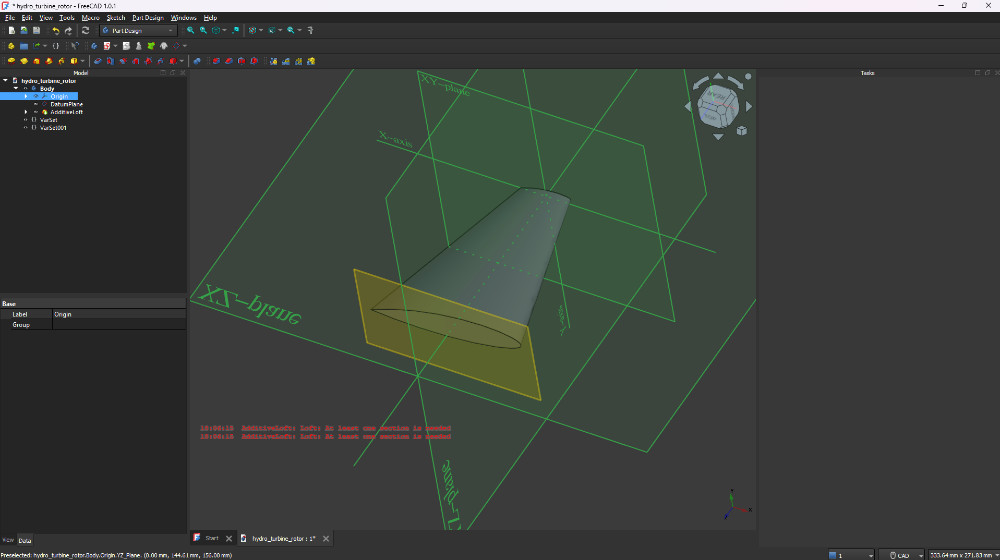
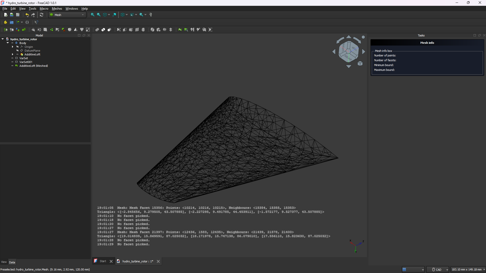

If you're considering employing me or found this page exploring, this should be a sort of blog exploring my interest in CFD with OpenFoam. I'm also very excited to be beginning my usage of CAD software, using FreeCAD because open source rules:).
I'm certainly still in the process of developing my Eulerian and Lagrangian fluid simulator, however I think I want to retry them with OpenGL because I would like them to be 3D at some point and I think OpenGL is better for this.
I've just graduated recently from UoM, and my last semester had a great module "Physics of Fluids" that I got really into. It was mostly analytical solutions of the Navier-Stokes equations and applying some boundary conditions. The module had loads of interesting fluid dynamics phenomena like ripples in water flow when it runs down a hill that answered some of those questions I had when I was much younger walking to school. Now that I've graduated, I can definitely see myself entering the CFD space and who knows maybe one day I'll suddenly find myself doing CFD simulations for hydropower (dream job).
I'm trying to learn how to use OpenFoam, FreeCad and Paraview one, because I want to use them in the future and two, because I'm trying to 3D print a turbine rotor and then use it to drive a washing machine motor to generate power. I want to simulate the rotor first however and try and generate some expected values of power and then use a multi-meter to see how far off I was. I'm doing this alongside a recent engineering graduate "Steven Hargy" who's helping with the CAD but hopefully soon, I won't need the help.
While I try use these softwares I'll also be going through some CFD university notes Prof. Dongwook Lee's CFD Notes. I done some sort of assessment for a CFD job today and it went awful, maybe shouldn't have wung it but it was a learning experience so whatever.
Turns out CAD modelling isn't the easiest thing ever. At the moment I've got a aerofoil created, I'm going to try copy paste it onto a central cylinder 3-4 times and add a nose cone then try create a mesh of this rotor.
Turned the fin into a mesh, it looks really cool. FreeCAD seems to have some in-built FEM analysis so I'm going to try use some of it before doing the full model to see what happens.
